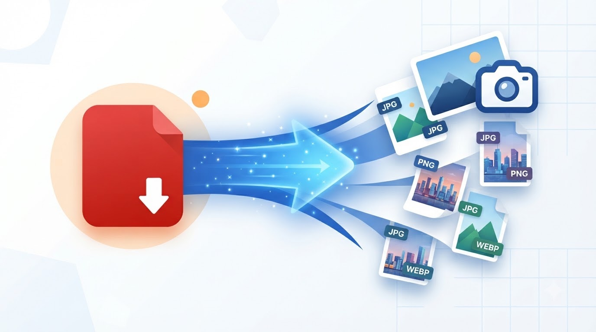

PDF to Image Converter
Extract all pages from a PDF file into high-quality JPG, PNG, or WEBP images bundled inside a ZIP archive.
Select or Drop PDF File
Extract all pages into crisp individual images
Complete Guide: Convert PDF Pages into High-Resolution Images
Converting a PDF into images is one of the most common tasks for students, office workers, designers, and anyone who deals with digital documents. Whether you want to post a page on Instagram, attach a screenshot to an email, embed a page in a blog, or simply share a single page from a 100-page report on WhatsApp — extracting PDF pages as JPG, PNG, or WEBP images is the fastest way to do it.
DocEasy's PDF to Image Converter does exactly this — and it does it entirely inside your browser. No uploads, no file servers, no waiting in queues. The moment you click convert, PDF.js reads the PDF, renders every page on a hidden Canvas, converts each page to your chosen image format, and finally bundles all pages into a single downloadable ZIP archive.

📷 [Place Demo Here: assets/images/pdf-to-jpg-demo.jpg]What is PDF to Image Conversion?
PDF (Portable Document Format) is a container that stores text, images, vector graphics, and fonts together. When you open a PDF, your PDF reader renders it into pixels. PDF to image conversion is simply capturing that rendered output as a picture file — one image per page.
The result is a set of image files (JPG, PNG, or WEBP), each representing one page of your original PDF. This makes the content easier to share, embed, or edit with any image tool. For example, a PDF page can be posted directly on social media, added to a Google Slides presentation, or inserted into a Word document.
Why Convert PDF to Images?
- Sharing on social media: Instagram, WhatsApp, and Facebook don't support PDF — but they love images.
- Embedding in websites: Blog posts and e-commerce listings accept image URLs, not PDFs.
- Editing the content: You can crop, annotate, or OCR an image using free tools.
- Creating thumbnails: Websites need preview images of PDF documents.
- Uploading to portals: Many government and exam portals accept only images, not PDFs.
- Reading on any device: Images open instantly on any phone without a PDF reader.
- Archiving individual pages: Sometimes you only want one page from a large report.
- Printing single pages: Print exactly one page as an image without opening a PDF reader.
How to Use This Tool (Step-by-Step)
- Upload your PDF: Click the drop zone or drag a PDF file into it. The tool instantly reads the file — nothing is uploaded anywhere.
- Enter password (if needed): If the PDF is encrypted, a password box appears. Type the password — it is used only locally in your browser.
- Choose output format: Pick JPG, PNG, or WEBP depending on your use case (see comparison below).
- Select image quality: Low (smallest), High (recommended), or Maximum (largest). This affects the JPEG/WEBP compression.
- Click "Convert & Download ZIP": The tool renders each page one by one, showing progress as it goes.
- Save the ZIP: Your browser downloads a ZIP file containing one image per page plus a README.html file.
JPG vs PNG vs WEBP — Which Format Should You Pick?
| Format | Best For | File Size | Transparency |
|---|---|---|---|
| JPG | Photos, scanned pages, documents | Small | No |
| PNG | Text pages, screenshots, charts | Large | Yes |
| WEBP | Websites, best compression | Smallest | Yes |
Rule of thumb: If your PDF contains photos or scanned images, use JPG. If it contains crisp text, charts, or graphs — use PNG to preserve sharp edges. If you're uploading to a website and want the smallest file, use WEBP.
Password-Protected PDFs
Many PDFs (bank statements, exam admit cards, government documents) are encrypted with a password. DocEasy detects this automatically. As soon as you drop the file, PDF.js tries to open it — and if it throws a PasswordException, a password input field appears.
Enter the correct password, and the conversion proceeds normally. The password is never stored, never logged, and never leaves your browser. It is used only in-memory to unlock the PDF and render its pages.
What's Inside the ZIP?
- One image per PDF page, named like
your-file-page-1.jpg,your-file-page-2.jpg, and so on. - A README.html file — a printable A4 document that lists how many pages were converted, what format, and links back to DocEasy.
Privacy — Why DocEasy is Different
Most "free online PDF tools" upload your document to their servers. From there, they can technically read, log, or store your file. For sensitive documents like bank statements, ID proofs, or legal contracts, this is a real privacy risk.
DocEasy processes everything in your browser using PDF.js (Mozilla's open-source PDF engine) and the HTML5 Canvas API. When you click convert:
- Your file is read into the browser's memory via
FileReader/arrayBuffer(). - Pages are rendered locally using your device's CPU/GPU.
- Images are converted to Base64 using Canvas.
- All pages are zipped using JSZip, entirely offline.
- Nothing is sent over the network.
You can verify this yourself — open Developer Tools (F12), go to the Network tab, and click Convert. You will see zero outgoing requests carrying your PDF data.
Common Use Cases
- Students: Extract diagrams from textbook PDFs for notes and assignments.
- Office workers: Convert invoices and reports into image attachments for emails.
- Designers: Convert design mockups into high-resolution PNGs for clients.
- Content creators: Turn PDF pages into Instagram carousel images.
- Teachers: Convert exam papers into images for online classes.
- Developers: Generate preview thumbnails for uploaded PDFs.
- eMitra / CSC operators: Convert Aadhaar and PAN PDFs into images for KYC submissions.
Frequently Asked Questions
Are my PDF files uploaded to a server?
No. Every page is rendered locally inside your browser using PDF.js and Canvas. Nothing is uploaded, stored, or logged.
Do the output images have watermarks?
No. All output images are completely clean — no watermark, no logo, no branding. You can use them commercially.
Can I convert a password-protected PDF?
Yes. The tool automatically detects encrypted PDFs and shows a password field. Enter the correct password, and conversion continues. The password never leaves your browser.
How many pages can I convert at once?
There is no hard limit. You can convert hundreds of pages in one go. Larger PDFs take longer because rendering happens on your device's CPU.
Which format should I choose — JPG, PNG, or WEBP?
Use JPG for photos and scanned documents, PNG for text-heavy pages and screenshots, and WEBP for the best compression at modern quality.
Will the output quality be good enough for printing?
Yes. Pages are rendered at 2× scale (approximately 144 DPI), which is sharp enough for A4 printing and screen use.
What if I only want one page?
Convert the entire PDF and simply delete the images you don't need from the extracted ZIP folder.
Can I convert to a single long image instead of one image per page?
Not currently. This tool produces one image per page, which is the standard output format for PDF-to-image conversion.
Is this tool free?
Yes. DocEasy's PDF to Image Converter is 100% free forever — no signup, no email, no hidden charges, no daily limit.
Does it work on mobile phones?
Yes. It works on Android, iPhone, and iPad in any modern browser (Chrome, Safari, Edge, Firefox).
What is the maximum file size?
There is no fixed limit, but very large PDFs (100+ MB) may slow down your browser. For best results, use Chrome or Edge on a device with at least 4 GB RAM.
Are the images compressed or full quality?
You control the quality. "Maximum" gives near-lossless quality; "Low" gives smaller files. PNG is always lossless.
Can I use this for commercial purposes?
Yes. Everything you generate with DocEasy belongs to you. You can use it for commercial projects, client work, or paid courses.
Do I need to install any software?
No. It runs entirely in your browser. No installation, no extensions, no signup.
Why is the conversion taking time?
All rendering happens on your device — not on a server. Large PDFs with many pages or high-resolution graphics take longer. A 10-page PDF typically converts in 5–10 seconds on a modern device.